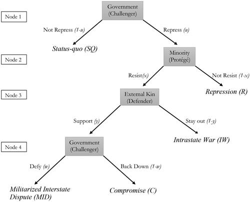
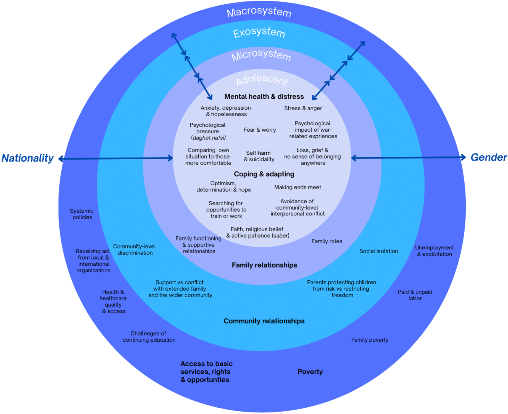
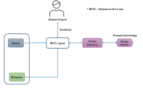
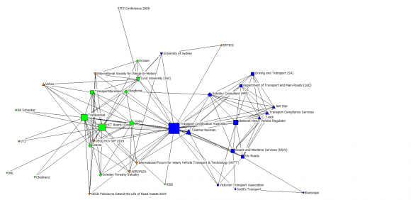

All Publications & Full Reports
Complete INFO REPORTS with full text and cover images.
-

Youth-Led Educational Interventions, Material Security and Digital Governance for Displaced Youth
European Commission — European Child Guarantee [Ares(2026)2684187], 2026
Read Full Report Submitted
-

The Impact of Mental Health Challenges on the Enjoyment of Human Rights by Young People
UN OHCHR — Youth Mental Health and Human Rights, 2026
Read Full Report Submitted
-

New Technologies and Transitional Justice
UN OHCHR — New Technologies and Transitional Justice, 2025
Read Full Report PDF SSRN Published
-

Rights of Persons Belonging to National or Ethnic, Religious and Linguistic Minorities
UN OHCHR — 2026 Report on Minority Rights, 2026
Read Full Report SSRN Published
-
Mitigating Peripheral Supply Chain Dependencies in Frontier AI
OpenAI Global Affairs & Procurement — US AI Supply Chain RFP, 2026
Read Full Report Submitted
-
Algorithmic Safety and Cognitive Vulnerabilities in Generative AI (DRCF)
Digital Regulation Cooperation Forum, 2026
Read Full Report Submitted
-
Algorithmic Safety and Cognitive Vulnerabilities in Generative AI (Anthropic)
Anthropic Public Policy & Global Affairs, 2026
Read Full Report Submitted